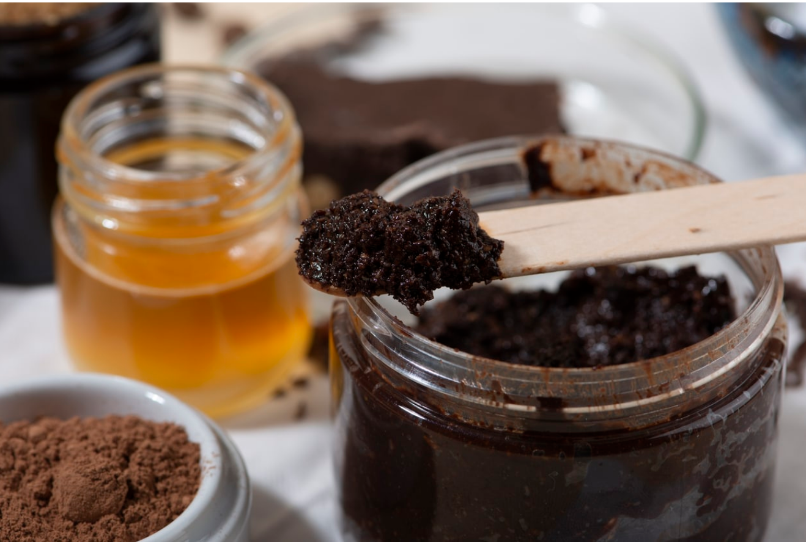

Gommage au cacao

Description
Le gommage au cacao DARIKA est un soin exfoliant 100% naturel fabriqué de manière artisanale à partir d'ingrédients bruts : sucre, poudre de cacao, miel, gel d'aloe vera, huile de coco et beurre de karité bio. Il nettoie la peau en profondeur tout en la nourrissant.
Ingrédients
- Sucre de canne brun (exfoliant naturel)
- Poudre de cacao (antioxydant, purifiant)
- Miel (hydratant, antibactérien naturel)
- Gel d'aloe vera (apaisant, régénérant)
- Huile de coco (nourrissante, assouplissante)
- Beurre de karité bio (réparateur, protecteur)
Processus de transformation
- Préparation de la poudre de cacao : les fèves sont torréfiées, broyées et tamisées pour obtenir une poudre fine sans impuretés.
- Extraction des ingrédients gras : l'huile de coco et le beurre de karité sont fondus doucement à basse température pour conserver leurs propriétés.
- Filtrage des ingrédients liquides : le miel est filtré, et le gel d'aloe vera est prélevé à partir de feuilles fraîches.
- Mélange à froid : tous les ingrédients sont incorporés manuellement ou avec un batteur lent, sans chauffage, pour garder leurs vertus intactes.
- Repos : le mélange repose 12h pour homogénéisation et stabilisation.
- Conditionnement : le gommage est versé dans des pots opaques de 100g ou 250g, étiquetés et prêts à l'emploi.
Propriétés du gommage
- Exfolie les cellules mortes et affine le grain de peau
- Hydrate et nourrit grâce au miel, karité et coco
- Traite les imperfections, les zones sèches, la cellulite
- Convient au visage et au corps
Conseils d'utilisation
Appliquer 2 fois par semaine sur peau préalablement nettoyée et humide. Laisser poser 20 à 30 minutes, puis gommer avec un gant de crin en mouvements circulaires. Rincer à l'eau tiède.